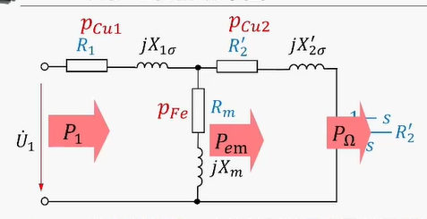
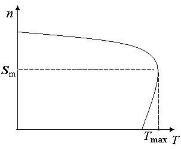
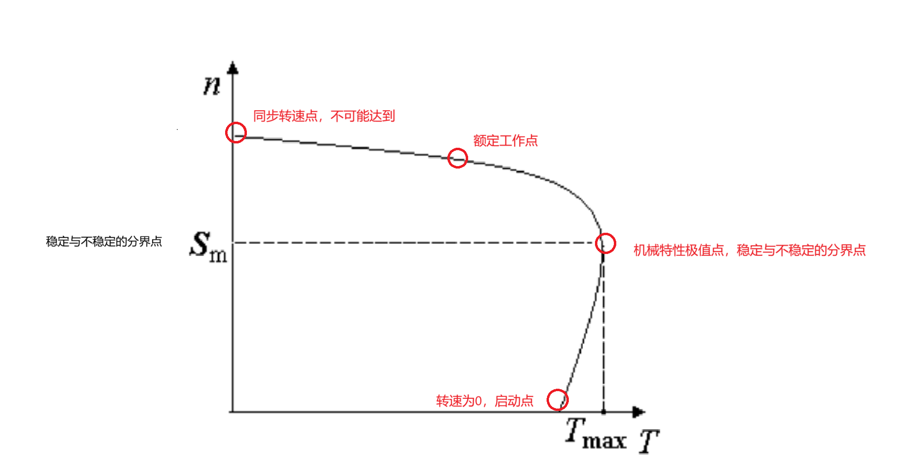
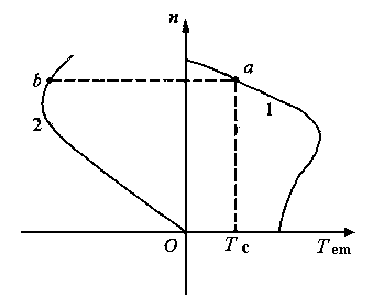

异步交流电机
Note
现在基本是知识点的梳理，笔者精力和时间有限，很多公式的推导和整理还请参见课本和老师的ppt，我这里就是顺了一遍思路。
如果能帮到你，那就再好不过了。发现问题欢迎给我发邮件反映。
异步电机的分类、结构
鼠笼型转子制造工艺比起绕线式更加简单，因此应用更加广泛。
绕线式转子的特点是可以通过滑环和电刷在转子绕组中加入附加电阻，用于改善电动机的起动新能，或调节电动机的转速。
鼠笼型的特点是转子的极对数与定子极对数匹配，适合变极调速场合。
这里的东西之后会详细说。
异步电动机的气隙要求尽量小，因为异步电机的转子上没办法加励磁，所以磁场全部来自于定子。因为这个，如果气隙很大，那么就会导致主磁路的磁阻增大，所需的励磁电流就会增大，功率因数就会降低。气隙的大小取决于工艺水准。
与变压器对比：
- 变压器没有气隙。
异步电机的运行
本节主要包括
旋转磁场，工作原理，转差率，额定值，运行参数分析和计算
旋转磁场
通过三相对称交流电会在气隙中产生旋转磁场。
旋转的转向（direction）是由相序决定的，我们总是由超前的相传向滞后的相。
重要的一点
交换任意两极的顺序，就可以改变旋转磁场的方向（旋转的方向）。也就是任意交换定子侧的两根电源线。
旋转的速度：
旋转磁场的转速取决于定子电流的频率\(f_1\)和电动机的磁极对数\(p\)。
笔者注
这个地方，只需要定性的去想旋转磁场的行为就可以了，不要去想这个旋转的磁场是不是均匀的，它的大小会怎么变，因为定量的计算需要使用有限元分析进行数值模拟，跟我们这个课关系不大。
总之一句话，不要纠结。
异步电机的工作原理
左力右电的定律。
鼠笼的条相对于旋转磁场往相反的方向运动，然后就会产生电动势，电动势会带来电流，而这个电流会让导条受力。一通分析之后，这个受力的方向会和磁场旋转的方向相同。（用楞次定律也可以解释，而且更加直观）
从这里的受力就可以分析出“异步”在何处。读者可以想象一下，相当于这个旋转的磁场再牵着一根绳子拉着转子转动，而这个磁场和受力是不均匀的，也就是绳子是软的，所以，转子一定会和磁场存在一定的延时，这就是“异步”的含义。
注意
因为异步电机转子上的电来自感应而非外加，所以我们也把异步电机称为“感应电机”。
转差率
得益于上面对“异步”的分析，我们很容易想到，需要一个物理量来衡量磁场转速和转子转速的差值，恭喜你想到了转差率的定义。
- 转差率对于异步电机来说是一个很重要的量。
- 转差率的符号可以判断异步电机的工作状态——电动机、发电机和电磁制动。
| 状态 | 转差率 | 转速关系 |
|---|---|---|
| 电动机 | \(0<s<1\) | 电磁转矩的方向和旋转磁场，以及转子的旋转方向都相同，电磁转矩为驱动性质（拖动作用）的转矩。转子转速小于旋转磁场。 |
| 发电机 | \(s<0\) | 电磁转矩方向和旋转磁场以及转子转向都相反，电磁转矩为制动的性质。转子转速大于旋转磁场； |
| 电磁制动 | \(s>1\) | 电磁转矩方向于旋转磁场的方向相同，但是和转子方向相反，为制动的转矩。 |
异步电机的额定值
- 额定功率：输出的机械功率。
- 额定电压：额定状态下加载定子绕组上的线电压。
- 额定电流：电动机在定子绕组上加额定电压，轴上输出额定功率的时候，定子绕组中的线电流。
- 额定频率：50Hz(China)
- 额定转速：123条件下的转轴的转速。
- 额定功率引述：电动机加额定负载的时候，定子侧的功率因数。
- 额定效率：\(P_N / \sqrt{3}U_NI_N\)
注意
上面的各种东西除了额定转速描述的是转子之外，其余的量指的都是定子。
异步电机的功率因数总是滞后的。（只能从电网吸收无功，感性负载）
异步电动机运行参数分析和计算
三相异步电动机的电磁关系和变压器类似。
假设转子不转
频率一样，所以就完全和变压器一样。
参数定义
\(k_{\omega1}\) 和 \(k_{\omega2}\) 指的是一次侧和二次侧的绕组系数（来自同步电机，记住就行了）
转子转起来了
这时候转子感应电势的频率\(f_2\)为
转子电流的频率是变化的，于转差率有关。正常运行的时候，转子电流的频率很低，1-3Hz。负载越重，转速越低，转差率越大，转子的电流频率就会越大。
所以，转子旋转时的感应电动势为：
注意
\(E_{2s}\) 表示转子转动的情景，而\(E_{2}\)就表示转子不转的情景。
因为s一般在0.01和0.06之间，所以电机中对转子的绝缘水平要求并不高。转起来的时候电动势明显变小。
从上面的分析就能推导出等效电路。
比较直观的是，转差率\(s\)越大，则\(I_2\)越大，而功率因数则变小。
重要结论
定子磁场和转子磁场相对静止。
这个结论一开始还是不太好理解，这里就是在转子磁场在实际转动的基础上，因为自身感应出的电流也会产生磁场，所以就会增加 \(\Delta n\)，所以和就是 \(n_s\).
值得注意的是，转子磁场的转速和转子本身的转速不一样。
三相异步电机的等值电路、功率图、转矩
等值电路
异步电机的等值电路，和变压器比较类似，但是多了一个频率的归算。相当于在转子侧串联一个大小为 \(\frac{1-s}{s} R_2\) 的纯电阻，这样子就可以变换成转子不转的情形。
也就是二次侧频率和一次侧一样。
值得注意的是，这个串联上去的等效电阻消耗的功率是总机械功率 \(P_\Omega\)。
注意
等效电路中\(R_m\)体现的是定子侧的铁耗，因为转子侧的频率很小，可忽略。分析异步电动机的铁损只有定子侧的铁损。

输出机械功率和真实的输出功率有差异，需要减去机械损耗（不变）和附加损耗（可变）。这里和直流电机是类似的。
两个重要的功率关系式：
所以电磁功率一定的时候，电机转速越低，铜耗越大，机械功率越小。我们一般要求异步电动机不能长期在低速下长时间运行。
异步电机的转矩
和直流电机类似，不再赘述。
异步电机的机械特性
自然机械特性
定义：三相异步电机的机械特性是指于电压、频率和参数固定的条件下，电磁转矩和转速之间的函数关系。
物理表达式：
\(C_T\)是三相异步电机的转矩常数，\(\Phi_m\)是气隙主磁通，\(\phi_2\)是转子侧功率因数角。我们一般使用这个公式用作定性分析。
参数表达式：
这个公式对原来的等效电路进行了\(\Gamma\)等效。
三相异步电动机在电压、频率均为额定值不变，定、转子回路不串入任何电路元件的条件下的机械特性成为固有机械特性。

为什么这里存在同一个转矩对应两种转速的情况？建议把图旋转90度，就变成了转差率和转矩的关系，这样就很好理解了。
转速最大的点对应的转速就是\(n_s\)，这时转差率为0，电磁转矩也为0，同样的，转速为0的时候，转差率为1，输出的转矩为\(T_{st}\)

临界转矩和临界转差
我们最关关心的是极值点，这个点的表达式可以用求导得到，因为原边的铜耗比较小，进一步分析，可以得到：
最大转矩与电压的平方成正比，与转子电阻无关。
最大转矩
最大转矩是电机本身的特性参数与外加负载无关，仅与相关电机参数有关：
- 与电压的平方成正比
- 与频率的平方近似成反比
- 与漏电抗近似反比
- 与转子是否串电阻无关
临界转差与转子电阻成正比，与电压大小无关。
临界转差
- 与转子电阻成正比
- 与漏电抗近似成反比
- 与电压大小无关
- 与频率近似成反比
起动转矩
电机刚启动的时候的转矩为起动转矩，启动转矩是电机参数相关的电机特性，和转子所带的负载无关。
起动转矩
- 与电压的平方成正比
- 频率越高，起动转矩越小
- 漏抗越大，起动转矩越小
- 与转子串电阻有关，串入合适的电阻后，起动转矩变大。
过载能力
定义如下：
| 总结 | 转子电阻\(R_2'\) | 电压\(U_1\) |
|---|---|---|
| 最大转矩 \(T_{max}\) | 无关 | 平方成正比 |
| 临界转差率 \(s_m\) | 成正比 | 无关 |
| 起动转矩 \(T_{st}\) | 适当增加电阻可增加 | 平方成正比 |
人为机械特性
- 降低电压
- 转子串入电阻
为什么不考虑提升电压
由于不能让电机进入此磁饱和区，所以只能降低端电压。
换句话说，就是提升电压之后，进入饱和区，励磁电流增大，引起功率因数降低。
相关分析就在上面。
三相异步电机的起动
起动需要满足的条件：
- 起动电流足够小，以免对电网产生过大的冲击。
- 起动转矩足够大，以免无法带动负载。
降压起动
因为电动机的起动电流是和电压成正比的，所以我们可以通过降低电压来降低起动电流。
但随之起动转矩也会降低，所以这种方法只适合轻载或空载。
Y-△起动
这种方法法只适用于正常运行时定子绕组为三角形(△)接法的异步电动机。
- 定子每相绕组上的电压降低到正常工作的 \(\frac{1}{\sqrt{3}}\)，这样就可以降低起动电流。
- 定子侧线电流，即起动电流，Y形起动的电流是Δ形起动电流的 \(\frac{1}{3}\)。
- 起动转矩是正常运行时的 \(\frac{1}{3}\)。
自耦变压器起动
自耦变压器变比为 \(k=\frac{N_1}{N_2}\)，则起动电流和起动转矩都是正常运行时的 \(\frac{1}{k^2}\)。
串电阻起动
绕线型异步电动机只要在转子电路中串接恰当大小的电阻，就可以减小起动电流，同时还增大了起动转矩，适用于重载或满载的情况。、
分级串电阻
原理直观，不再赘述。
串接频敏变阻器起动
本质原理：
频敏变阻器的阻值随着频率的变化而变化，所以可以用来调节电阻值。
异步电机的调速
变频调速
AC-DC-AC
主磁通对电机运行的影响
主磁通增加，引起磁路的过分饱和：
- 励磁电流增加
- 功率因数下降
- 铁芯过热
主磁通减小：
- 产生同样的转矩需要更大的转子电流
- 转子损耗增加，效率降低
- 电动机容量不能得到充分利用，达到的最大转矩下降，过载性能变差。
保持主磁通不变，调节频率，同时降低电压，可以实现调速。
关键就是保持\(U_1/f_1\)为常数。
硬度不变，很适合恒转矩的场景。
变极调速——改变定子侧绕组的极对数
只适用于鼠笼型异步电机。
改变转差率调速
和启动类似，一个是降低电压，一个是串电阻。
特点：
- 适用于风机型负载，调速范围比较宽
- 风机型负载的转矩和转速是正相关的
转子串电阻调速
带恒转矩负载时若增大所串电阻，电机的转速会降低，转差率增大。
电源电压一定，转子贿赂串电阻调速的时候，转子电流可维持不变，功率因数不变，从定子侧输入的功率不变。
改变转差率只是改变了电磁功率在铜耗和机械之间的分配，总值是不变的。
异步电机的制动
主要分为机械制动和电气制动。
- 机械制动指的是三相异步电机切断电源之后，利用机械装置让电机快速停转。
- 电气制动是指让三相异步电机的电磁转矩和电动机的旋转方向相反。主要包括，能耗制动、反接制动和回馈制动。
能耗制动
将定子绕组从交流电网脱离，并立即通入直流电流，定子绕组产生静止的恒定磁场。

反接制动
回馈制动
转速超过旋转磁场同步转速，发电机状态。
- 突然改变机械特性曲线，但是转速不能突变
- 变级调速常出现，少数变多数
- 变频调速降频的时候
- 下放重物